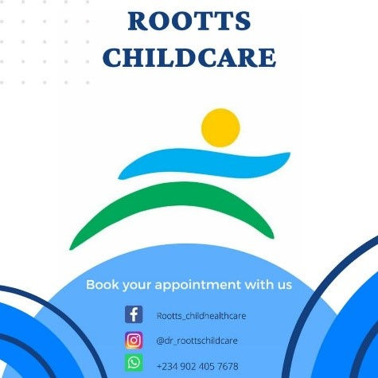
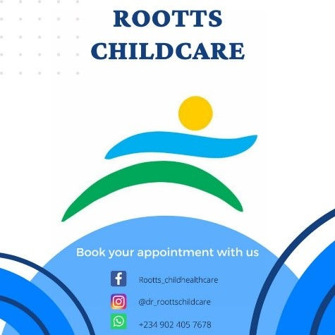

Titlayo Kayode-Alabi
Pediatrician
Abuja, Nigeria
dr_roottschildcare
Roottschildhealthcare
+234 902 4057 678
About Me
I am a pediatrician, storyteller, and happy wife.
My Hobbies
My Jounal
My Establishment
My Books
Nighttime stories with great gran
A Christian storybook for kids
This is a Christian storybook for children aged six years and above. It is a story of two kids, Tim and Eliza, and their Christian great-grandmother Lois called Great Gran. The children are taught about the love of God, how they should relate with others in love, and to put their trust in God. The worksheet at the end of each chapter makes it as educative as it is fun to read. Parents are encouraged to join them in working through the worksheets. You can access it here.
L.I.V.E
A book for women in waiting
This is a book of hope in which she shares her journey through the last seven years of waiting for the fruit of the womb. She brings her experiences, storytelling skills, biblical knowledge, research, and empathy into the book, making it a unique book for women in waiting. She hopes everyone who reads it will find peace and be willing to L.I.V.E. You may get a copy here.
My Mandate
To raise an army of “wholesome” children.
“I am a deliverer out of Zion!” Obadiah 1:21
I fulfill this through my different expressions. As a pediatrician in a private hospital in Abuja, Nigeria, I actively evaluate, diagnose, and manage various childhood illnesses. I engage in awareness, education, and advocacy programs that provide parents and caregivers with health information, helping them make informed decisions about their children’s health. I teach children between the ages of one to fourteen in my local church assembly. I authored two books, a Christian storybook for kids and a book for women in waiting. I am writing more books as I strongly sense the calling on me to use words as a voice, “calling children out of darkness into Zion, the place of safety.”
 
